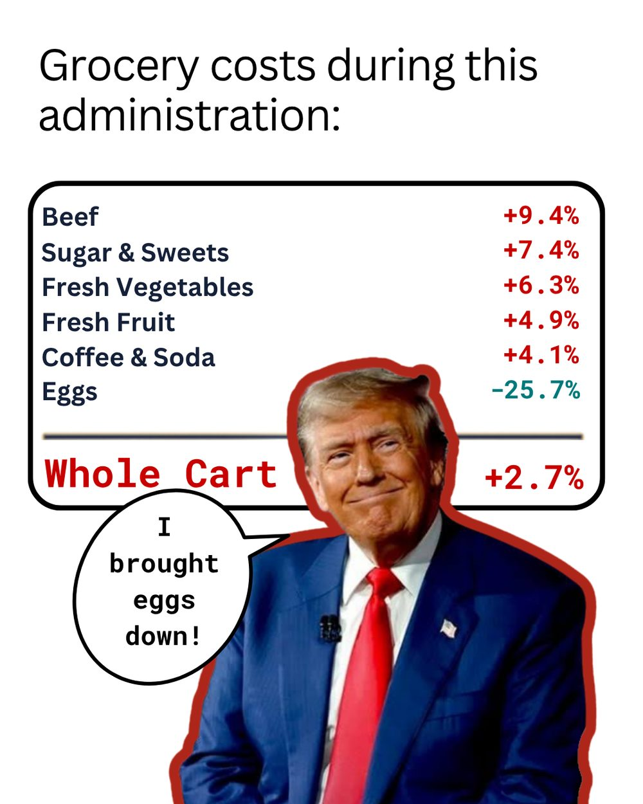
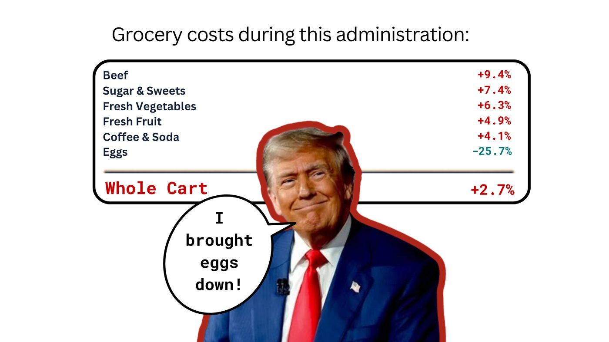
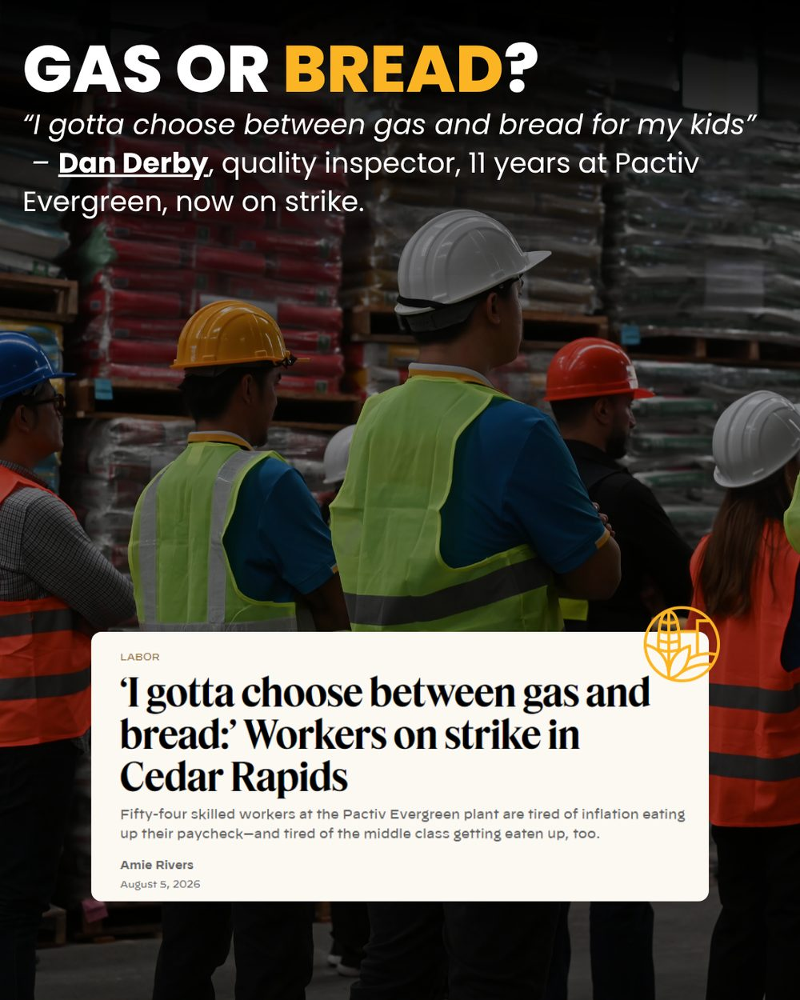
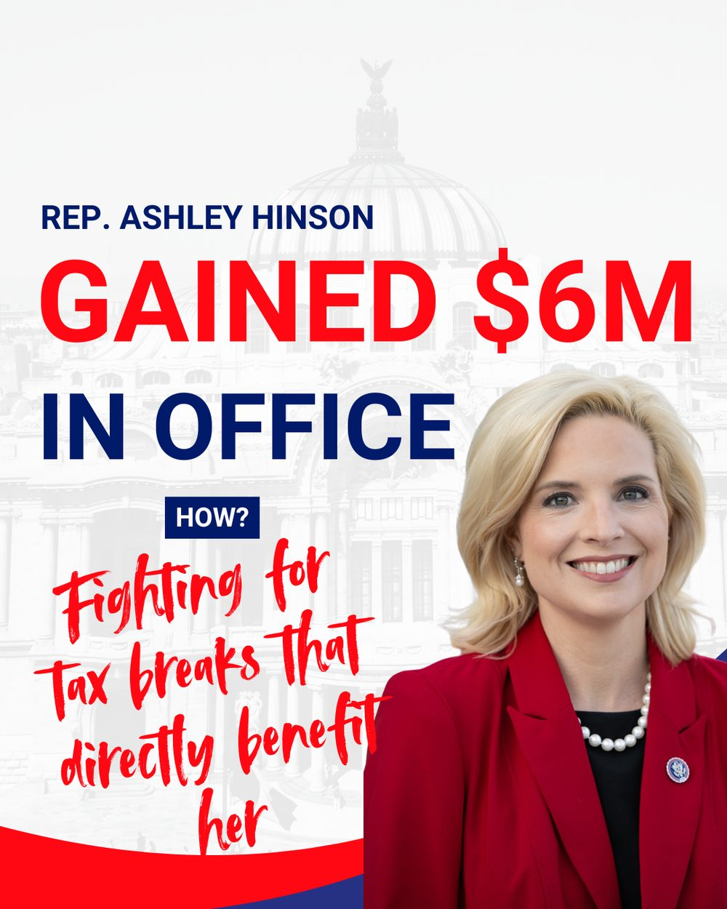
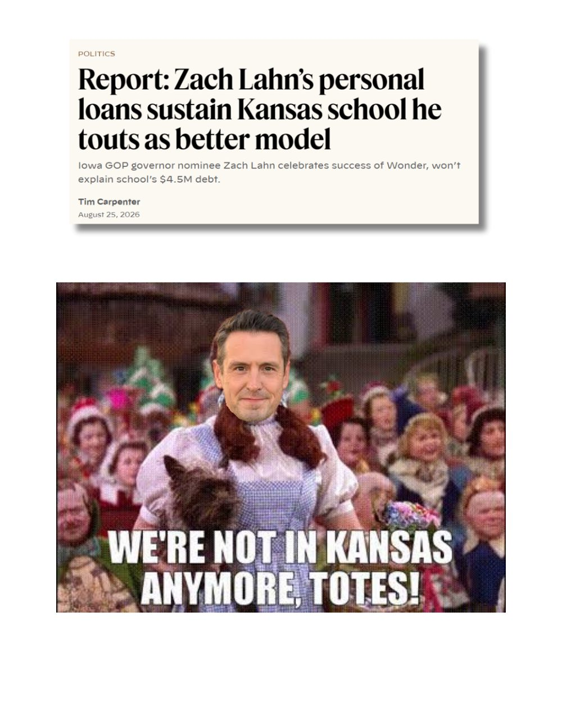
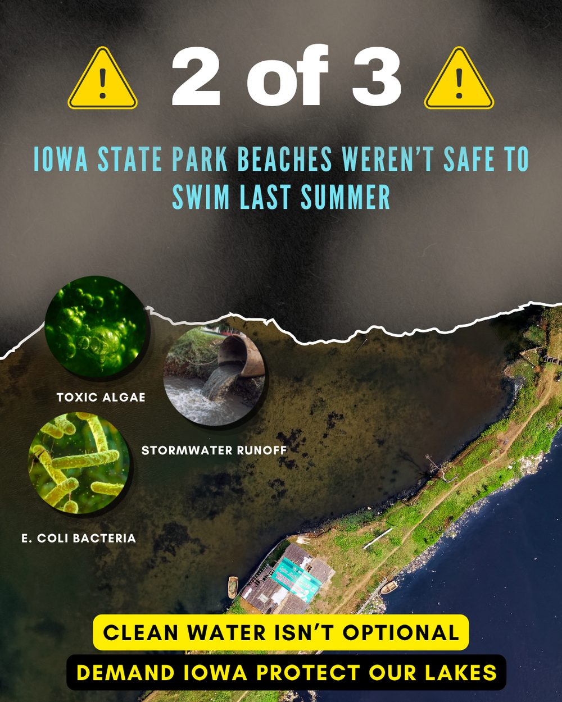
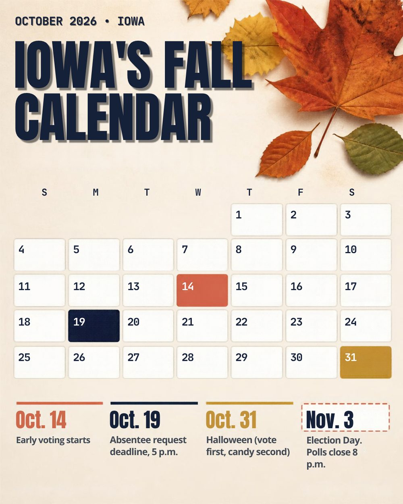
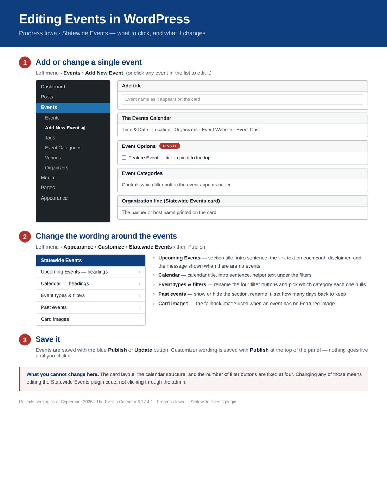
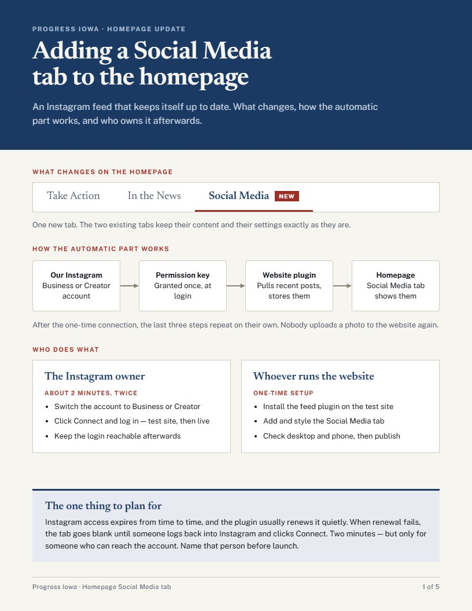

Progress Iowa is a statewide progressive advocacy organization. Each week its supporters get a social toolkit of ready-to-post graphics and captions. My job was to make posts good enough that real people would put them on their own feeds. I'd never worked in politics.
Empower toolkits, Sosha analytics, WordPress, Claude
The problem
A weekly social toolkit only works if supporters choose to share it. I'd never worked in politics, with this brand, or under nonprofit compliance rules.
The decision
Learn the patterns in two weeks, then design every post around what makes a supporter hit share: an emotional hook, a credible source, and a version native to each platform.
The result
Shares on my posts climbed from 14 to 28 over the summer, then my grocery receipt earned 121, 4.3× the next best. Taking on the website too led to a raise and an extension.
My role
Content strategy, graphic design and copywriting for weekly toolkits across seven platforms. Owner of the WordPress site roadmap.
121shares on my top post, 4.3× the next best
6–8on-brand graphics a week, in two formats each
2 wksto learn the brand, the politics and the compliance rules
15s → 2shomepage load after I traced and fixed a blocking script
01 — Challenge
Everything about the job was new to me.
I came in with design and social media experience, but none of it was in politics. In my first two weeks I had to learn:
The brandProgress Iowa's voice, colors, issues and the line between sharp and off-message.
Political messagingWhich Iowa officials, bills and stories mattered, and how to talk about them.
Compliance rulesWhat nonprofit (501(c)(3)) content can and can't say, with every post going through my supervisor's review.
Empower toolkitsHow weekly toolkits reach supporters, and how Sosha measures what they do with them.
The toolkit model changes what "good" means. A post only works if a supporter decides it's worth sharing to their own friends and family. So the north-star metric isn't likes. It's shares, then link clicks, then the earned reach Sosha estimates from both.
02 — Ramp-up
Learn the pattern, then improve on it.
I started by studying what the team had already published: which formats ran, which platforms each toolkit went to, how captions were written. I mirrored those patterns for my first posts while I learned the compliance review process, then started changing what didn't work.
By my third week I was producing 6–8 on-brand graphics every week, each built twice: a 1080×1350 portrait version for Instagram and TikTok, and a 1920×1080 landscape version for X, Facebook, LinkedIn, Bluesky and Threads.
My supervisor reviewed each week's posts and shared what was landing. The clearest signal: cost-of-living posts performed best, memes worked when they used fewer words, and captions should tell a story instead of listing facts. I built that into the next batch.
03 — Strategy
Four rules I designed every post around.
Proof + punch
An emotional hook people feel, plus a credible source that makes it safe to share: a joke backed by price data, a quote backed by a news story, a meme backed by a headline.
National hooks travel further
Posts about national figures spread beyond Iowa's network. Pairing a national figure with a local, wallet-level issue gave a post both reach and relevance.
Image says what, caption says why
The graphic delivers the point in a glance. The caption gives context for readers outside Iowa: why it matters and who's affected.
Fit the format to the feed
Two sizes for every graphic, and caption length tuned per platform: longer on Instagram, very short on X.
04 — Post breakdowns
Why each post looks the way it does.
Six posts from my fellowship, with the reasoning behind each one and its Sosha results. Shares and clicks are totals across both versions of the post.
The grocery receipt
Sep 1, 2026 · #1 post that week
121Shares
18Clicks
4.3×Next-best post


Portrait for Instagram and TikTok; landscape for X, Facebook, LinkedIn, Bluesky and Threads.
The idea
Two things I knew performed: national figures, which spread beyond Iowa, and rising costs. I combined them, then researched what the administration's policies had done to everyday prices.
Why a receipt
Everyone already knows how to read a grocery receipt, so the data needs no explanation. The monospace "Whole Cart +2.7%" total reads like the bottom of a real one.
Why eggs
Eggs are the only number going down, and the punchline. They carry satire of the claim that inflation is beaten, his overconfidence, his deflection from what people are paying, and meme culture through the speech bubble.
Platform-native copy
This was the post where I wrote a different caption for each platform group, longer for Instagram and very short for X. It became my top performer.

Aug 11, 2026 · Labor
Gas or bread?
Aug 11, 2026 · #1 post that week
28Shares
14Clicks
The hook
A worker's own words: "I gotta choose between gas and bread for my kids." A quote like that creates an emotional connection and earns sympathy faster than any statistic could.
Design choices
"BREAD" in bold gold breaks up the headline and puts the weight on the impossible choice. The worker's name, job and 11 years of tenure make it a real person. The article card at the bottom is the proof, and the reason this post drove my second-highest click count.
54 workers. One ask: wages that keep up with rising costs. Corporate greed isn't inevitable, it's a choice. Stand with UAW Local 1024.

Jul 22, 2026 · Accountability
"Gained $6M in office"
Jul 22, 2026 · #2 post that week
24Shares
2Clicks
The hook
The headline gives the fact but not the context. The small "HOW?" signals that the story goes deeper, that it was deliberate, and that the reader has to keep reading to get the details.
Typography
Heavy condensed type states the fact. The answer switches to an angry brush script, so it reads as the explanation and carries the emotion. Changing fonts also breaks the text into digestible pieces.

Sep 7, 2026 · Education
Not in Kansas anymore
Sep 7, 2026 · #3 post that week
18Shares
4Clicks
The format
A news headline as proof, a meme as the punch. That combined two formats my supervisor saw performing well: headline screenshots, and memes with very few words.
Splitting the message
The headline and meme point to the laughable idea, but readers outside Iowa wouldn't have the context. So the meme carries the what, and the caption explains why it matters and who's affected.
No Zach, you're not in Kansas anymore (unless you are). This is Iowa, where we once had the best public schools in the country. That's why we need fully funded public education, not more voucher schemes and unaccredited schools you're used to.

Jun 9, 2026 · Environment · my second week
2 of 3 beaches unsafe
Jun 9, 2026 · #3 post that week
14Shares
5Clicks
Lead with the number
"2 of 3" is the most alarming fact in the story, so it became the headline at full size. It gives the hook and the urgency before anyone reads a word.
Warning-sign design
Yellow and black and the ⚠ icons say "hazard" instantly, and carry straight down to the call to action: demand Iowa protect our lakes. Three labeled photos turn "pollution" into three concrete causes.
What I learned
I added hashtags for search and discoverability. I also missed TikTok: I was mirroring older posts to learn which platforms to use. When Empower later shifted which platforms to prioritize, I updated my process.
Clean water isn't optional. Share with your community and together let's demand better from our lawmakers! #Iowa #CleanWater #IowaLakes

Oct 6, 2026 · Voting · fall toolkit
Iowa's fall calendar
Oct 6, 2026 · #2 post that week
8Shares
2Clicks
The brief
That week's toolkit theme was fall and spooky season. A calendar fit the season and the real dates, held several deadlines in one visual, and nudged people to literally mark their calendars instead of voting at the last minute.
Design choices
Each key date has its own color, repeated in the legend below. Election Day sits outside the grid in a dashed box, set apart as what's coming next. Halloween is a reminder that holidays feel better once the important things are done.
Compliance
As voter information from a nonprofit, it stays strictly nonpartisan. This is a utility post: its job is to be screenshotted and saved, which share counts don't capture.
Screenshot this and send it to the friend who always asks, "Wait, when's the election?"
05 — Results
What the numbers told me.
Through the summer, shares on my posts climbed as I applied feedback: 14, then 24, then 28. Then the grocery receipt, built on everything I'd learned about cost of living and national reach, earned 121 shares.
The data also showed me where clicks come from. About three of every four clicks came from X, Facebook, LinkedIn, Bluesky and Threads, because Instagram and TikTok captions can't carry a clickable link. That's why a post's click count says as much about its platform mix as about the post.
Supporter shares per post
Clean waterJun 914
Gained $6MJul 2224
Gas or breadAug 1128
Grocery receiptSep 1121
Not in KansasSep 718
Fall calendarOct 68
145 / 68shares from link platforms vs. Instagram & TikTok
34 / 11clicks from link platforms vs. Instagram & TikTok
Source: Sosha toolkit analytics, totals per post across both versions.
06 — Beyond the role
Then I said yes to the website.
Progress Iowa's WordPress site had a list of ten priorities and nobody on the team who knew WordPress. I'd never touched it either. I volunteered, used Claude as a technical partner to learn as I went, and set up a safe way to work: daily backups, a private staging copy of the site, and a numbered log of every change so anything could be undone.
The role grew with it. I earned a pay increase and a fellowship extension.
12–15s → under 2s
Found what was slowing the homepage
An A/B test showed the signup popup's anti-spam script froze the page for 10+ seconds. I deferred it to run after the page loads, keeping spam protection without the wait.
10-item roadmap
Owned the site's priority list
Rebuilt the signup forms and popup, built an events page with a calendar the team can edit right in the page editor, rebuilt the research page on staging, and updated social links (TikTok, Threads and Bluesky in; Twitter out).
Staging first
A security upgrade, tested before it went live
Tested the site's PHP 8.1 → 8.3 upgrade on a private copy, coordinated with the hosting admin, and only then upgraded the live site.
5 guides
Documentation so the team could run it
An 18-slide WordPress + Claude how-to with copy-paste prompts, quick guides for adding events with and without AI, and a guide to connecting Instagram to the site.
"Written for people who have never touched WordPress — because none of us had."Opening line of the WordPress + Claude how-to I wrote for the team

Events editing guide

Homepage social feed guide
07 — Reflection
What I'd keep, change, and test next.
What worked
Treating shares as the goal, because that's what the toolkit is for.
Pairing national hooks with local, everyday costs.
Acting on weekly feedback instead of waiting for a monthly review.
What I'd do differently
Confirm every platform on day one instead of copying older posts.
Write platform-specific captions for every post, not just the receipt.
Track saves and screenshots for utility posts like the calendar.
What I'd test next
Short-form video versions of top graphics.
The receipt format on other cost-of-living topics.